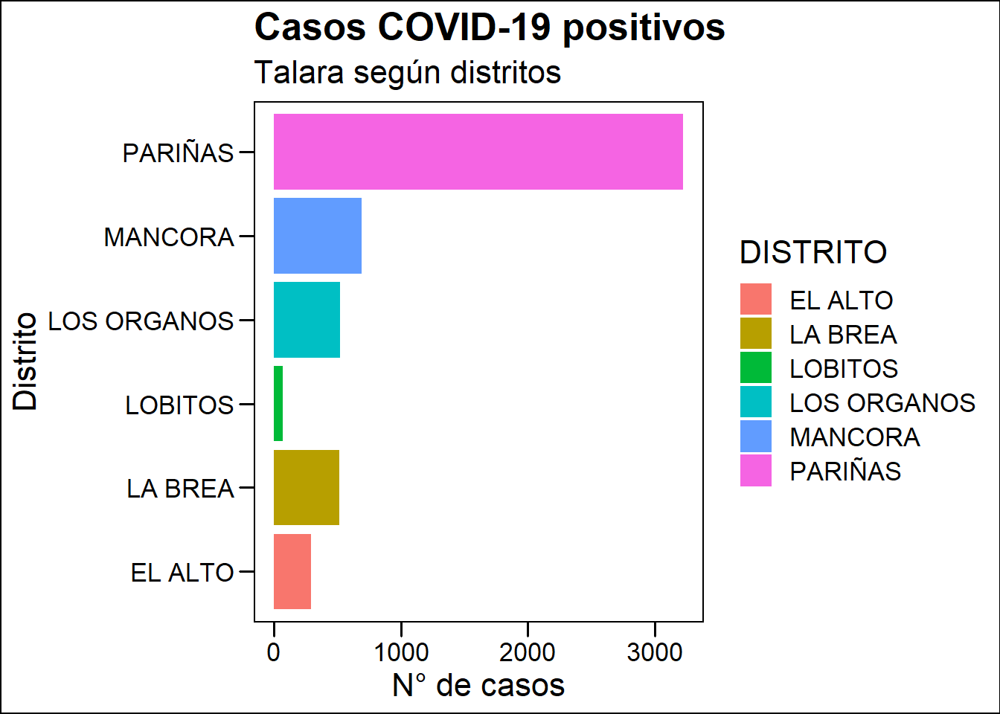

Capítulo 1 Desarrollo Humano y COVID
Felipe Bedoya
1.1 Introducción
De acuerdo con el Programa de las Naciones Unidas para el Desarrollo (PNUD), el nivel de desarrollo humano alcanzado en los últimos 30 años podría retroceder debido al COVID-19 debido a su impacto en la salud, educación e ingresos de la población1.
Como se sabe, el nivel de desarrollo humano de los países se mide a través del Índice de Desarrollo Humano del PNUD, que es un indicador que toma en cuenta la esperanza de vida al nacer, los logros educativos y los ingresos per cápita.
El Informe “El Reto de la Igualdad”2 del PNUD Perú menciona que en el periodo 2003-2019, el Perú ha experimentado un incremento sostenido de los niveles de desarrollo humano a nivel nacional, no obstante se observan marcadas brechas de desigualdad explicada por factores productivos y territoriales.
Justamente estos factores que explican los diferentes niveles de desarrollo humano en el país podrían aportar, entre otros aspectos, a la mayor incidencia del COVID en distintas zonas del país. Por ejemplo, a lo largo de la costa, por ser el principal eje económico, o bien en las principales ciudades capitales debido a una mayor densidad poblacional.
En el marco de lo anterior, cabe la pregunta ¿es posible que el nivel del desarrollo humano incida en el mayor número de casos de covid?. Todo hace pensar que existe una relacion inversa entre ambos, a mayor nivel de desarrollo menor incidencia de COVID. Sin embargo, paises con altos índices de desarrollo han sufrido los efectos del COVID en su territorio.
Para responder a la preguta planteada, exploraremos la incidencia de casos de COVID y el nivel de desarrollo humano en los distritos de la provincia de Talara, como caso de análisis.
1.2 Paquetes usados
Se utilizaron los siguientes paquetes “readxl” y “tidyverse.” El primero para importar bases de datos en excel y el segundo para realizar el análisis de datos. Asimismo, usaremos el paquete “ggthemes” para editar la apariencia de nuestros gráficos.
library(readxl)
library(tidyverse)
library(ggthemes)1.3 Conjuntos de datos usaddos
Los datos empleados serán los de Casos Positivos COVID-19 del MINSA y el Indice de Desarrollo Humano del PNUD.
El Índice de Desarrollo Humano (IDH) se puede descargar de la página web del Estudio de actualización de los indices de desarrollo humano el PNUD en el siguiente enlace: https://www.pe.undp.org/content/dam/peru/docs/Publicaciones%20pobreza/idh2019/IDH%202019.xlsx
Y los casos positivos de COVID se puede descarga de la página web de Datos Abiertos del MINSA en el siguiente enlace: https://cloud.minsa.gob.pe/s/AC2adyLkHCKjmfm/download
En el primer caso, se presenta información a nivel distrital, provincial y departamental de los componentes del Índice de Desarollo Humano, que comprende la Esperanza de Vida al nacer, medida en años; el Logro Educativo, es decir los años de estudios alcanzados en la poblacion de 25 años a más y la poblacion mayoor de 18 años con educacion secundaria; y los Ingresos Familiares per cápita.
En el segundo caso, la información de los casos positivos COVID contiene datos sobre el distrito, provincia y departamento de las personas que son positivas, segun el tipo de prueba realizada, la fecha del registro de la misma, y la fecha de corte.
positivos_covid <- read_csv2("data/positivos_covid.csv")En el marco de lo anterior, veremos el caso de la provincia de Talara (Piura).
Los casos del COVID-19 al 16 de junio del 2021, según distritos. El mayor numero de casos COVID-19 positivos se registran en el distrito de Pariñas (3,223 casos), seguido de Máncora y Los Órganos (690 y 518 casos respectivamente).
A continuación, la Figura 1 muestra el total de casos para los distritos de la provincia de Talara.
positivos_covid %>%
select(FECHA_RESULTADO, PROVINCIA, DISTRITO, SEXO, EDAD) %>%
filter (PROVINCIA == "TALARA") %>%
group_by(DISTRITO) %>%
summarise(total_casos = n()) %>%
arrange(desc(total_casos)) %>%
ungroup() %>%
ggplot(aes(total_casos, DISTRITO, fill = DISTRITO)) +
geom_col() +
labs (
title = "Casos COVID-19 positivos",
subtitle = "Talara según distritos",
x = "N° de casos",
y = "Distrito"
) +
theme_base()
En cuanto al IDH, en la provincia de Talara los distritos con mayor IDH son Lobitos y Pariñas con 0.59, en segundo lugar, se ubica La Brea (0.58), seguido de El Alto (0.56). Los Órganos y Máncora ocupan los últimos lugares con 0.56 en cada caso.
idh_distritos_2019 <- read_xlsx("data/idh_distritos_2019.xlsx")idh_talara <- idh_distritos_2019 %>%
filter( Distrito %in% c("El Alto", "La Brea", "Lobitos", "Los Organos", "Mancora", "Pariñas")) %>%
select(Distrito, IDH, habitantes) %>%
mutate(Distrito = str_to_upper(Distrito)) %>%
mutate(DISTRITO = Distrito) %>%
select("IDH", "DISTRITO", "habitantes")idh_talara %>%
ggplot(aes(DISTRITO, IDH)) +
geom_col(fill = "red") +
labs(
title = "IDH Talara",
subtitle = "Según distritos",
x = "Distritos",
y = "IDH"
) +
theme_base()A continuación, analizaremos el número de habitantes según distritos en la provincia de Talara.
Como se muestra en la figura, el distrito con mayor número de habitantes es Pariñas (89,997 personas), seguido de Máncora y La Brea, con 14,044 y 10,993 habitantes respectivamente.
idh_talara_hab <- idh_distritos_2019 %>%
select(Distrito, habitantes) %>%
filter(c(
Distrito %in% c(
"El Alto",
"La Brea",
"Lobitos",
"Los Organos",
"Mancora",
"Pariñas"
)
)) %>%
arrange(desc(habitantes))idh_talara_hab %>%
ggplot(aes(Distrito, habitantes)) +
geom_col(fill = "red") +
labs(title = "Habitantes",
subtitle = "Según distritos",
x = "Distritos",
y = "Habitantes") +
theme_base()En lo que respecta a nivel de ingresos, podemos observar que el distrito con mayor nivel de ingreso familiar per cápita es Lobito (1,021 soles), seguido de Pariñas (1,000 soles). Los distritos con menor nivel de ingresos en la provincia son La Brea y Los Órganos, con 895 y 984 soles respectivamente.
idh_talara_ing <- idh_distritos_2019 %>%
select(Distrito, ing_fam_pc) %>%
filter(c(
Distrito %in% c(
"El Alto",
"La Brea",
"Lobitos",
"Los Organos",
"Mancora",
"Pariñas"
)
)) %>%
arrange(desc(ing_fam_pc))idh_talara_ing %>%
ggplot(aes(Distrito, ing_fam_pc)) +
geom_col(fill = "red") +
labs(
title = "Ingreso Familiar per Cápita",
subtitle = "Según distritos",
x = "Distritos",
y = "Ingresos"
) +
theme_base()Ahora crearemos nuestro conjunto de datos que contiene información sobre COVID e IDH en una sola base para analizar la relación de los casos de COVID con el IDH, y adicionalmente con el número de habitantes y el nivel de ingreso familiar para observar su comportamiento.
Para lo anterior, creamos unimos nuestra base de COVID Talara que contiene los casos positivos de COVID para la provincia, con la base de IDH distrital de Talara. Como resultado obtenemos una sola base con información sobre COVID, IDH, población y nivel de ingresos per capita que son nuestras variables de interés.
covid_talara <- positivos_covid %>%
select(FECHA_RESULTADO, PROVINCIA, DISTRITO, SEXO, EDAD) %>%
filter (PROVINCIA == "TALARA") %>%
group_by(DISTRITO) %>%
summarise(total_casos = n()) idh_talara_full <- idh_distritos_2019 %>%
filter(Distrito %in% c(
"El Alto",
"La Brea",
"Lobitos",
"Los Organos",
"Mancora",
"Pariñas"
)) %>%
select(Distrito, IDH, habitantes, ing_fam_pc) %>%
mutate(Distrito = str_to_upper(Distrito)) %>%
mutate(DISTRITO = Distrito) %>%
select("IDH", "DISTRITO", "habitantes", "ing_fam_pc")idh_talara_full| IDH | DISTRITO | habitantes | ing_fam_pc |
|---|---|---|---|
| 0.5901151 | PARIÑAS | 89997.358 | 1000.6892 |
| 0.5751392 | EL ALTO | 7348.017 | 929.1954 |
| 0.5876647 | LA BREA | 10993.186 | 895.6171 |
| 0.5921873 | LOBITOS | 1552.580 | 1020.6190 |
| 0.5629466 | LOS ORGANOS | 9569.769 | 894.3106 |
| 0.5613902 | MANCORA | 14044.606 | 905.3640 |
covid_talara| DISTRITO | total_casos |
|---|---|
| EL ALTO | 289 |
| LA BREA | 515 |
| LOBITOS | 65 |
| LOS ORGANOS | 518 |
| MANCORA | 690 |
| PARIÑAS | 3223 |
talara_idh_covid <- covid_talara %>%
left_join(idh_talara_full)talara_idh_covid | DISTRITO | total_casos | IDH | habitantes | ing_fam_pc |
|---|---|---|---|---|
| EL ALTO | 289 | 0.5751392 | 7348.017 | 929.1954 |
| LA BREA | 515 | 0.5876647 | 10993.186 | 895.6171 |
| LOBITOS | 65 | 0.5921873 | 1552.580 | 1020.6190 |
| LOS ORGANOS | 518 | 0.5629466 | 9569.769 | 894.3106 |
| MANCORA | 690 | 0.5613902 | 14044.606 | 905.3640 |
| PARIÑAS | 3223 | 0.5901151 | 89997.358 | 1000.6892 |
1.4 Resultados
A continuación analizaremos el IDH con el número de casos positivos de COVID como porcentaje de la población total y el nivel de ingresos familiares per cápita.
En la Figura 5 se observa que distritos con menor IDH tienen mayor número de casos COVID como porcentaje de la población total (Los Órganos y Máncora). Asimismo, se observa que si bien Pariñas, tiene el mayor número de casos totales de COVID-19 en la provincia, como porcentaje de su población, es menor en comparación con los demás distritos, siendo que ademas posee el IDH más alto en comparación con otros distritos.
talara_idh_covid %>%
mutate(porccasosporhab = total_casos / habitantes * 100) %>%
ggplot(aes(IDH, porccasosporhab)) +
geom_point() +
geom_text(aes(label = DISTRITO)) +
lims(x = c(0.559, 0.595), y = c(3.2, 5.7))+
labs(
title = "IDH y Porcentaje de casos COVID-19",
subtitle = "Según distritos",
x = "IDH",
y = "% de habitantes contagiados de COVID-19"
) +
theme_base()
Similarmente, se observa que en lo que respecta al nivel de Ingresos familiares per cápita, aquellos distritos con mayores ingresos como Lobitos y Pariñas, presentan menores casos de COVID-19 por habitantes, a excepción de El Alto, que con un ingreso familiar menor que los distritos más ricos, presenta incluso menor tasa de casos positivos que el distrito de Lobitos.
talara_idh_covid %>%
mutate(porccasosporhab = total_casos / habitantes * 100) %>%
ggplot(aes(ing_fam_pc, porccasosporhab)) +
geom_point() +
geom_text(aes(label = DISTRITO)) +
lims(x = c(875, 1025), y = c(3.2, 5.7))+
labs(
title = "Ingresos familiares per cápita y Porcentaje de casos COVID-19 por habitantes",
subtitle = "Según distritos",
x = "Ingresos fam. per cápita",
y = "Total casos COVID-19 por habitantes"
) +
theme_base()
1.5 Conclusiones
Efectivamente, pareciera ser que el nivel de desarrollo humano, y en este caso, el nivel de ingresos familiar per cápita explican el menor número de casos positivos de COVID-19 en los distritos de la provincia de Talara, siendo que aquellos distritos con mayor IDH y nivel de ingresos registran menor número de casos COVID-19 como porcentaje de la población total.
https://www1.undp.org/content/undp/es/home/news-centre/news/2020/COVID19_Human_development_on_course_to_decline_for_the_first_time_since_1990.html↩︎
El Reto de la Igualdad. Una lectura de las dinámicas territoriales en el Perú. En: https://www.pe.undp.org/content/peru/es/home/library/poverty/el-reto-de-la-igualdad.html↩︎